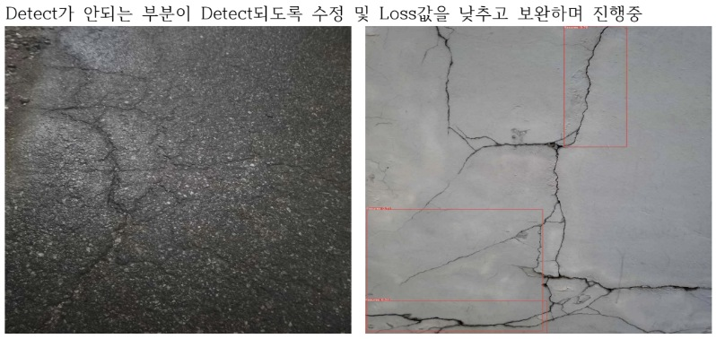

이미지에서 필요한 대상을 찾기
Python·Vision 개발 업무에서 YOLO 기반 객체 검출과 학습을 경험했습니다. 과거 이력서에는 YOLOv5 균열 검출 학습, 한국 음식 객체 검출·양 추정과 전이학습 수행 내용이 있습니다.
다른 문제로 이어진 시각 분석
최근 AI 스피칭 트레이너 연구에서는 YOLOv8 Pose를 발표자의 자세 관측에 활용했습니다. 시각 분석 결과를 음성과 자료의 근거와 함께 다루는 경험으로 연결했습니다.
